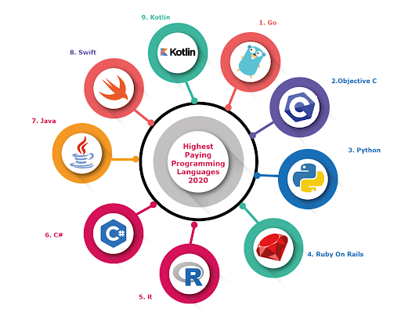

There are some programming languages that cannot be counted or counted, and each of these languages has its advantages and uses, and some of the common programming languages include the following: C language: It is a high-level programming language with general use, created in the seventies of Last century in Bell Labs by Dennis Richie, it is an ideal language for writing Firmware and Portable. Python: It is an object-oriented programming language, characterized by its ease of learning and its low complexity, in addition to the ability to run its programs on several operating systems. Java language: Java is a high-level programming language with general use,
In addition to being object oriented, it was created by Sun Microsystems in 1991, and is currently subject to Oracle, after the latter purchased Sun in 2009. According to a statistic from Oracle,
Currently, there are more than 9 million programmers that use the Java language. C ++ is a high-level programming language of general use, characterized by being very similar to C language, but it also supports object-oriented programming, which the programmer can take advantage of or programming in the usual C language without the need to adhere to programming Object Orientation.
